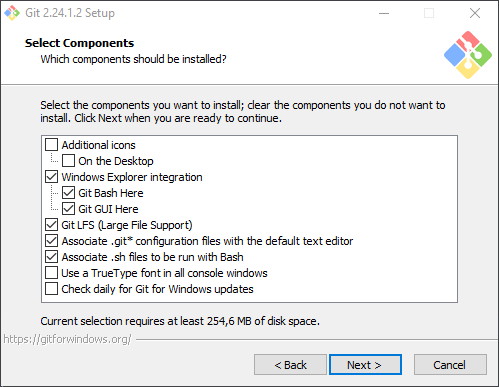
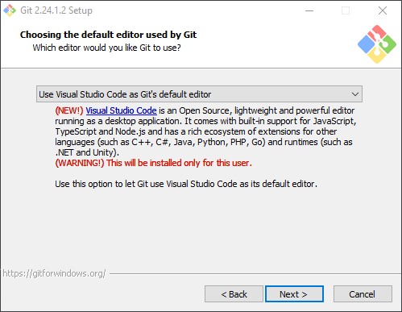
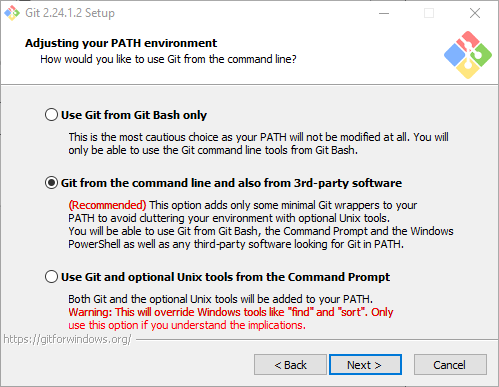
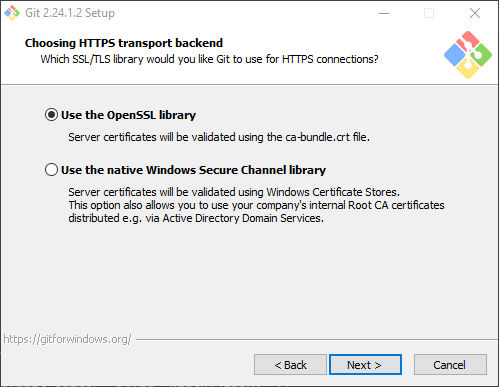
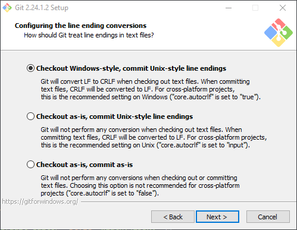
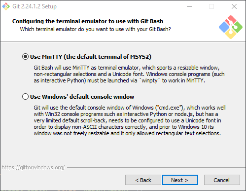
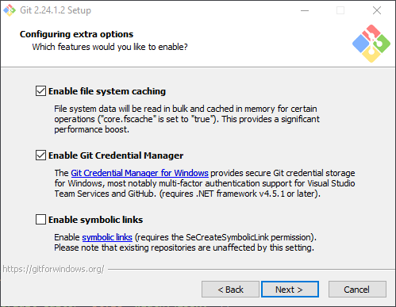
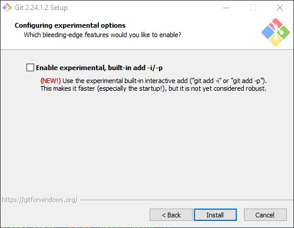
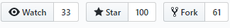

There are a lot of guides on the Internet that will show different aspects of what is described here, but this article will focus on a simple way to get started using the workflow we use for DSC modules and DSC resources within the DSC Community.
After you read through this guide, then please continue with the guide Contributor.
Create a free GitHub account by browsing to GitHub and clicking on the Sign up button.
Although enabling 2-factor authentication on your GitHub account is not required to contribute, it is recommended.
Although there are many PowerShell editors available and everyone has their own preference, most of the processes described here assume the use of Visual Studio Code. Using Visual Studio Code when working on DSC Resource modules has added benefits such as being able to detect and highlight some style guideline violations.
To install Visual Studio code visit the official site code.visualstudio.com.
The installation is straightforward using a wizard type of installation. Normally all defaults values suggested by the wizard can be used.
It is possible to install using Chocolatey.
choco install vscode
To be able to write PowerShell code in Visual Studio Code the extension need to be installed.
code --install-extension ms-vscode.PowerShell
This step is only relevant if Visual Studio Code was installed in the previous step.
Download and install Git for Windows from the official site git-scm.com.
The installation is straightforward using a wizard type of installation. Normally all defaults values suggested by the wizard can be used unless your environment need something special. There is one exception and that is that it might suit you better to use Visual Studio Code as the default editor for Git instead of Vim.








After the installation you can run this in PowerShell and it should return
the version of git if it was installed correctly.
PS> git --version
git version 2.24.1.windows.2
Git for Windows installed a credential manager that will help you connect using your GitHub credentials. It will popup the first time your credentials are needed, for example when pushing to a repository on GitHub.
It is possible to install using Chocolatey.
choco install git
Now you need to setup your name and e-mail in the global settings. This is used when you commit and push changes to a repository.
git config --global user.name "Your Name"
git config --global user.email "your@emailaddress.com"
We also need set how line endings should be treated.
git config --global core.autocrlf true
This is optional but helps with tab completion and better visualization of what branch you are working on when using PowerShell.
Run this in PowerShell.
Install-Module posh-git -Scope CurrentUser -Force
Import-Module -Name posh-git
Then to make sure the module is loaded each time you start PowerShell, add the import of the module to your PowerShell profile script.
code $profile
In the file that opened up in Visual Studio Code, add the following and save the file.
Import-Module -Name posh-git
The application GitVersion is used to
automatically increase the version in the build pipeline. It is optional,
if it is not installed the build version will always show as 0.0.1 when
running the build locally, but it is still possible to contribute without
this installed.
You need install Chocolatey first if you do not have it installed already.
When you have Chocolatey installed you install GitVersion using the following:
NOTE: You must be an elevated administrator to run
choco install.
choco install GitVersion.Portable
You install GitVersion using the following
brew install gitversion
NOTE: You need install Homebrew first if you do not have it installed already.
To clone a repository from GitHub you need the owner of the repository
and the repository name. The owner for DSC Community repositories are
dsccommunity and the repository name can be found in the list of
modules
Once you have that information you can clone the repository by using
git clone https://github.com/{owner}/{repositoryName}
For example to clone the repository for the module ComputerManagementDsc
into the folder c:\source.
cd c:\source
git clone https://github.com/dsccommunity/ComputerManagementDsc
This will make git to create a new directory with corresponding name
to the repository name (e.g. ComputerManagementDsc). This new folder
is called the local repository.
To see that the repository was cloned correctly then run git status in
the local repository folder.
PS> cd c:\source\ComputerManagementDsc
PS> git status
On branch master
Your branch is up to date with 'origin/master'.
nothing to commit, working tree clean
To send changes from your local repository you first fork the upstream repository, because all changes must first be pushed to a working branch in your fork before sending in a pull request. To learn more about forks read the article Forking Projects.
To fork an upstream repository, e.g. the DSC module ComputerManagementDsc, browse to the same URL used when cloning, e.g. https://github.com/dsccommunity/ComputerManagementDsc.
To the right of the page you will find a button named Fork. Click that and GitHub will create a fork (repository) in your own GitHub account.

To be able to send changes (commit in a working branch) to a fork of an upstream repository you need to add a remote to the local repository.
To add a remote we use git remote add,
a remote name, and the URL to the fork.
The remote name can be whatever we choose, but we assume you want to use
my as the remote name for a remote pointing to your fork.
When GitHub creates a fork of an upstream repo it creates a repository in
your GitHub account (means your are the owner of the fork). So the URL
to the fork would be https://github.com/{yourGitHubAccountName}/{repositoryName}
So for example to add remote pointing to your fork of ComputerManagementDsc
we run the following. Replace johlju with your actual GItHUb account
name.
cd c:\source\ComputerManagementDsc
git remote add my https://github.com/johlju/ComputerManagementDsc`.
To verify that the remote was added correctly you can run the following.
PS> git remote -v
my https://github.com/johlju/ComputerManagementDsc (fetch)
my https://github.com/johlju/ComputerManagementDsc (push)
origin https://github.com/dsccommunity/ComputerManagementDsc (fetch)
origin https://github.com/dsccommunity/ComputerManagementDsc (push)
Now you have two remote references:
To make changes you should always use another branch than master to add
those changes, let us call it the working branch. A working branch should
normally be based on the branch master so that you can easily work on
several other branches during the same period.
Creating a working branch separate from the default
masterbranch will allow you to create other working branches off of branchmasterlater while your other working branches is still open for code reviews.Limiting your current working branch to a single issue will also both streamline the code review and reduce the possibility of merge conflicts.
You create a new working branch using the following command
git checkout -b <working-branch-name> my/master. You should also
track the branch master in your fork, e.g. my/master so that you
will better see if the branch is behind or ahead in commits.
This will create a new local working branch in the local repository of ComputerManagementDsc, start tracking your fork’s master branch and then checkout (move) to the new branch.
cd c:\source\ComputerManagementDsc
git checkout master
git checkout -b my-working-branch my/master
You can now start making changes in your local branch. You can easily start Visual Studio Code and get it to automatically load the folder by running
cd c:\source\ComputerManagementDsc
code .
When you have made changes you need to commit them to your local branch.
Below we show how to commit and push using the command line, but it might
be easier to commit (using git) from within Visual Studio Code. How to
do that can be seen in this video.
You can see the status of changes with git status. To commit all
current changes (all modified files) you use git commit -a -m "<Commit message>".
-aargument tells Git to include all modified files in commit.-margument specifies the commit message.
To commit all changes with a commit message Fix issue #123, you run the
following.
git commit -a -m "Fix issue #123"
NOTE: You may make as many commits as you like. For example you can make just one commit for all changes, make a commit for each file you change, or a make a commit for each bug or feature if there are more than one you want to resolve. It is entirely up to you how, what and when you commit changes.
To push one or more commits containing your changes we use
git push <remote-name>. So to push the local working branch in your local
repository to the fork we do the following.
git push my
This will create a new branch in the fork, or update the existing branch if it was created in a previous push.
See the contributing guidelines for more information on how to send in a pull request from a branch in your fork.
There might be a need to update the pull request, for example due to a review comment, CI tests failed, or you realized that you missed something.
If you need to make more changes to a pull request you just push more commits to your working branch as mentioned in Making changes and pushing them to the fork
Pushing a new commit to your working branch in your fork will automatically update any pull request that is based on that working branch.
To see all branches run git branch -a, and to see working branches
run git branch -v.
Active branch is marked with an asterisk (
*). The argument-atells Git to show both local and remote branches.
To switch to another working branch you use git checkout <branch-name>.
For example to switch to the working branch fix-issue-#123 we do the
following.
git checkout fix-issue-#123
Once a pull request with your changes have been successfully merged into the upstream repository you can delete the working branch. It is no longer needed at that point, any further work requires a new working branch.
To delete your branch follow these steps:
git checkout master in the command prompt. This ensures that you
aren’t in the branch to be deleted (which isn’t allowed).git branch -d branch-name in the command prompt. This will
delete the branch on your local machine only if it has been successfully
merged to the upstream repository.
You can override this behavior with the –D flag, which always deletes
the local branch.git push my :branch-name in the command prompt (a space
before the colon and no space after it). This will delete the branch on
your GitHub fork.